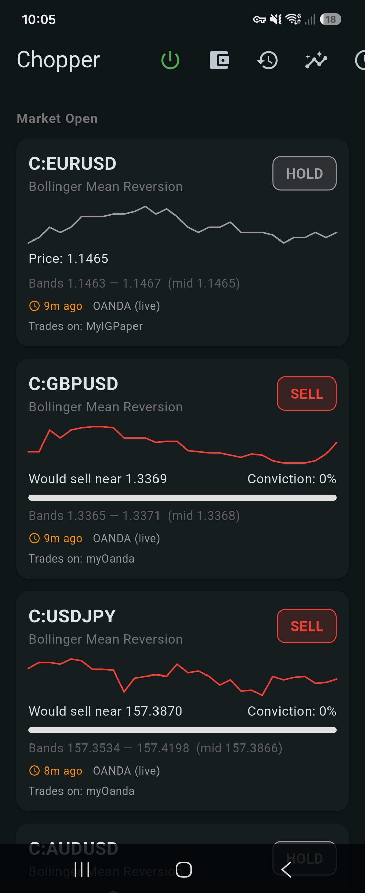
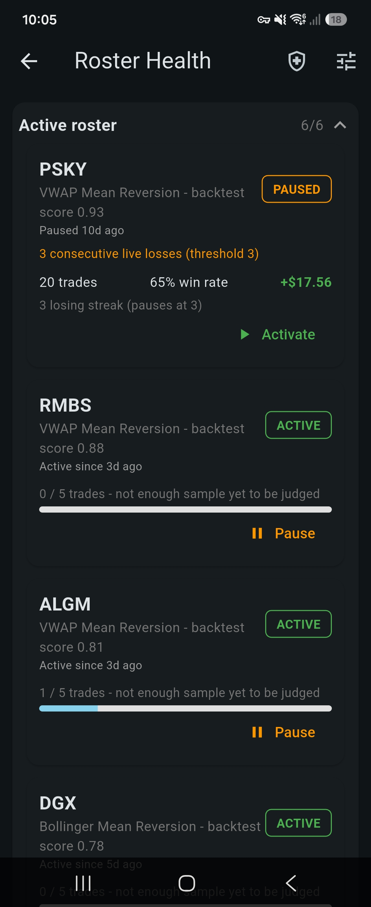
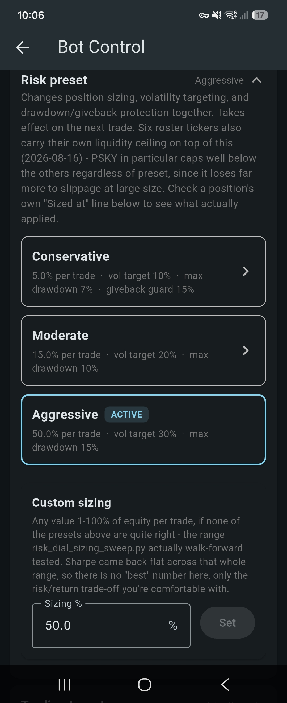
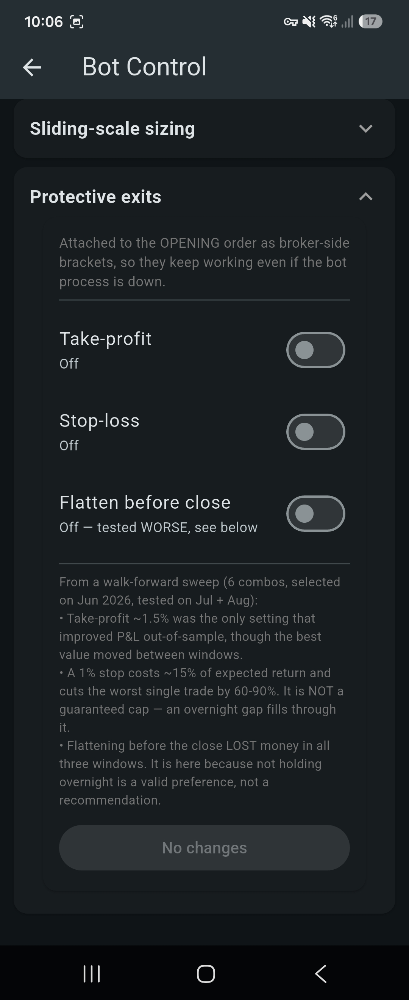

Case Study
A Flutter/Dart mobile app that reuses the trading system's own validated logic through a live API, so what the user sees never drifts from what was actually tested.
A background task silently failing on-device due to initialisation ordering, a class of bug a simulator never surfaced.
Data views that surface genuinely "unknown" states honestly rather than guessing at missing data, after finding and fixing a visualisation bug that misrepresented values on an unhandled edge case.
A live signal feed reusing the trading system's own strategy output through the API, not a re-implementation, so the mobile view can never quietly diverge from what was actually backtested.



